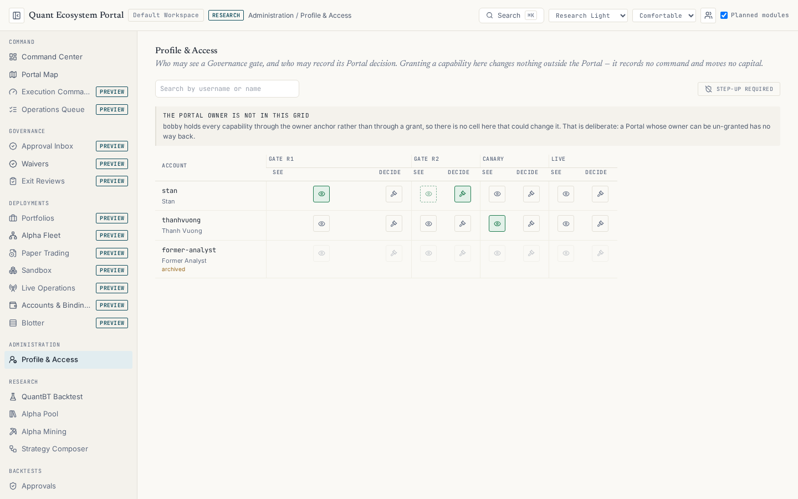

/administration/profile-access — preview build, 1440px, BFF-double sample data. It is an admin grid of other accounts, not a self-view. Switch to “What changes” to see the proposal marked against it.Profile & Access
Fresh · 20sBusiness permissions not loadedSigned in as
Stan 1
asmith
user_7f3a…e1
Role label (a description only)
Manager · read-allResearcher · inactive
Researcher · own slice
Not availablePermissions not loaded
App sign-in 2
Active
Session ends in 7h 12m
Business access
Accepted
membership r19
None activeLast grant expired 12 Oct
Accepted
membership r12
Not availableTrading system not reachable
1 · What you can see 3
Visibility only. It says nothing about what you may change.
| Area | What you see | Note |
|---|---|---|
| Overview | All authorized | Fund totals with their source and coverage |
| Portfolios | All authorized | Full portfolio totals |
| Alpha Fleet | All authorized | Every owner |
| Accounts | All authorized | Account secrets are never shown to anyone |
| Archived Alphas | All authorized | List not published yet; the page says so |
| Operations | All authorized | Receipts, exceptions and audit |
| R1 gate | Can see | Requests waiting at this gate. Seeing is not deciding. |
| R2 gate | Can see | Requests waiting at this gate. Seeing is not deciding. |
| Canary gate | Can see | Requests waiting at this gate. Seeing is not deciding. |
| Live gate | Can see | Requests waiting at this gate. Seeing is not deciding. |
| Overview | Nothing yet | No business access is active |
| Portfolios | Nothing yet | No business access is active |
| Alpha Fleet | Nothing yet | No business access is active |
| Accounts | Nothing yet | No business access is active |
| Archived Alphas | Nothing yet | No business access is active |
| Operations | Nothing yet | No business access is active |
| R1 gate | Nothing yet | No business access is active |
| R2 gate | Nothing yet | No business access is active |
| Canary gate | Nothing yet | No business access is active |
| Live gate | Nothing yet | No business access is active |
| Overview | Your slice | “My execution overview”, no fund totals |
| Portfolios | Your part | Portfolios that hold your alphas, labelled “your part”, never “total” |
| Alpha Fleet | Alphas you own | Rankings use only what you can see |
| Accounts | Not shown to your role | Balances and bindings are for managers |
| Archived Alphas | Alphas you own | Evidence for your own alphas |
| Operations | Your requests | Plus exceptions on your alphas |
| R1 gate | Your requests | Only requests you made |
| R2 gate | Not shown to your role | Gate decisions are for managers |
| Canary gate | Not shown to your role | Gate decisions are for managers |
| Live gate | Not shown to your role | Gate decisions are for managers |
| Overview | Not availablePermissions not loaded | |
| Portfolios | Not availablePermissions not loaded | |
| Alpha Fleet | Not availablePermissions not loaded | |
| Accounts | Not availablePermissions not loaded | |
| Archived Alphas | Not availablePermissions not loaded | |
| Operations | Not availablePermissions not loaded | |
| R1 gate | Not availablePermissions not loaded | |
| R2 gate | Not availablePermissions not loaded | |
| Canary gate | Not availablePermissions not loaded | |
| Live gate | Not availablePermissions not loaded | |
Seeing something never lets you change it 4
2 · What you can do 5
Each action says why it is off, in plain words.
| Action | Status | Why |
|---|---|---|
| Change fund budgets or recall capital | Not available yet | Capital commands are not turned on for this environment. Your role allows them once they are. |
| Archive an alpha | Allowed · needs approval | A second person approves before anything changes. |
| Start a reactivation review | Allowed | Opens a review only. It never goes live by itself. |
| Approve stage exits | Partly allowed | Group heading only: each gate is decided on its own, below. 6 |
| ↳ R1 gate · decide | Allowed | Decide on R1 requests. |
| ↳ R2 gate · decide | Allowed | Decide on R2 requests. |
| ↳ Canary gate · decide | Allowed | Decide on Canary requests. |
| ↳ Live gate · decide | Waiting for confirmation | Your grant was sent but the trading system has not accepted it. You cannot decide at Live yet. |
| Manage users and grants | Allowed · within limit | You can give up to the access you hold, not above. Open Users & access STEP-UP REQUIRED Granting asks you to confirm your identity again first. |
| Change your own admin rights | Not allowed | Nobody can change their own admin rights. Another administrator does it. |
| Export tables | Not available yet | Export is not built yet. It will need its own grant. |
| Archive an alpha | Not allowed | No business access is active. Ask a manager to renew it. |
| Start a reactivation review | Not allowed | No business access is active. Ask a manager to renew it. |
| Manage users and grants | Not allowed | Not part of your role. |
| Export tables | Not available yet | Export is not built yet. |
| Change fund budgets or recall capital | Not allowed | This is a manager action. Your role is to view and research. |
| Archive your own alpha | Allowed · needs approval | A manager approves before anything changes. |
| Start a reactivation review | Not allowed | Managers start reviews. You can follow reviews on your own alphas. |
| Approve stage exits | Not allowed | Group heading only: each gate is decided on its own, below. |
| ↳ R1 gate · decide | Not allowed | Seeing a gate does not let you decide at it. Deciding is for managers. |
| ↳ R2 gate · decide | Not allowed | Seeing a gate does not let you decide at it. Deciding is for managers. |
| ↳ Canary gate · decide | Not allowed | Seeing a gate does not let you decide at it. Deciding is for managers. |
| ↳ Live gate · decide | Not allowed | Seeing a gate does not let you decide at it. Deciding is for managers. |
| Manage users and grants | Not allowed | Not part of your role. |
| Change your own admin rights | Not allowed | Nobody can change their own admin rights. Another administrator does it. |
| Export tables | Not available yet | Export is not built yet. |
| Not availablePermissions not loaded. No action is shown as allowed or blocked until they are. | ||
3 · How you got this access 8
Who granted what to you, and until when.
| Access | Granted by | Scope | Since | Expires | State |
|---|---|---|---|---|---|
| Manager read-all | Bobby (owner) | All business data | 1 Sep 2026 | No end date | Effective |
| Gate decisions R1, R2, Canary | Bobby (owner) | R1, R2 and Canary gates | 1 Sep 2026 | 31 Dec 2026 | Effective |
| Manage users | Bobby (owner) | Up to the access you hold | 15 Sep 2026 | 31 Dec 2026 | Effective |
| Gate decision Live | Bobby (owner) | Live gate | Sent 17 Oct 2026 | 31 Dec 2026 | Waiting for confirmationNothing changes until the trading system accepts it7 |
| Researcher view | Stan | Alphas you own | 20 Aug 2026 | 12 Oct 2026 | ExpiredAsk Stan to renew it |
| Researcher view | Stan | Alphas you own | 20 Aug 2026 | No end date | Effective |
| Archive your own alphas | Stan | Alphas you own · needs approval | 20 Aug 2026 | 31 Dec 2026 | Effective |
| Not availableGrants could not be loaded | |||||
What you can pass on: up to the access you hold, never above it, never to yourself. Owner accounts cannot be changed from here.
To get access back, ask a manager.
What changes vs today — Profile & Access (/administration/profile-access)
| Region | Today (V1, from the screenshot) | Proposed | Why · needs backend | |
|---|---|---|---|---|
| KEPT | See and act kept apart | Every gate has separate SEE and DECIDE columns | Two separate sections: what you can see, what you can do | Same principle, now stated in words. |
| KEPT | Owner protection | “The Portal owner is not in this grid… no cell here could change it” | “Owner accounts cannot be changed from here” | Guide §3.1: owner anchor stays out of reach. |
| KEPT | Admin grid of other accounts × gates (stan, thanhvuong, former-analyst, search by username, STEP-UP REQUIRED) | The whole V1 page | Not redrawn; reached from “Open Users & access” for people who may manage grants | Managing others stays an admin tool; only the self-view is new here. |
| NEW | Self-view identity | No view of the signed-in user; only a list of accounts | Who you are, app sign-in vs business access, membership revision | Needs a self-access read. |
| NEW | What you can see, by area | Only Governance gate SEE cells (R1, R2, Canary, Live) | Adds Overview, Portfolios, Fleet, Accounts, Archived, Operations: all authorized / your slice / nothing yet (gates stay, one row each) | Guide §3 and XLC-09. Never shows counts of hidden items. |
| KEPT | Per-gate SEE and DECIDE (R1, R2, Canary, Live) | Four gates, SEE and DECIDE columns for each account | One SEE row and one DECIDE row per gate for you; “Approve stage exits” is only a group heading | Rows instead of columns, because this is one person, not a grid of accounts. |
| KEPT | STEP-UP REQUIRED | Flag at the top right of the grid | Same flag on “Manage users and grants”: granting asks you to confirm again | Needs the step-up state from the session. |
| CHANGED | What you can do | Icon-only DECIDE cells; greyed or dashed with no reason | Named actions with a status and a plain reason | Reasons need the public copy dictionary (FE-015). |
| NEW | How you got this access | None. The grid shows a state, not who granted it, since when or until when | Granted by, scope, since, expires, state (Effective, Waiting for confirmation, Expired) | Needs grant provenance and expiry from the business system. |
| CHANGED | Page header and wording | Italic subtitle: “Granting a capability here changes nothing outside the Portal — it records no command and moves no capital” | Short section subtitles; the app-only vs business split appears as “App sign-in” and “Business access” | Keeps the same warning, in plain words. |